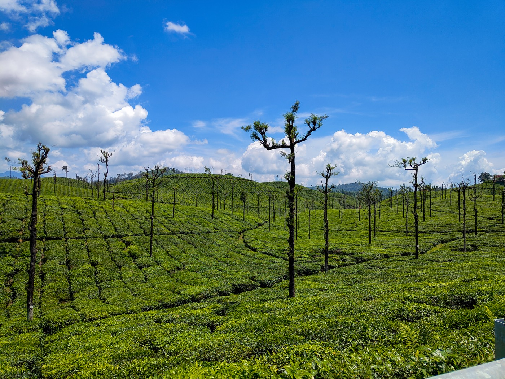
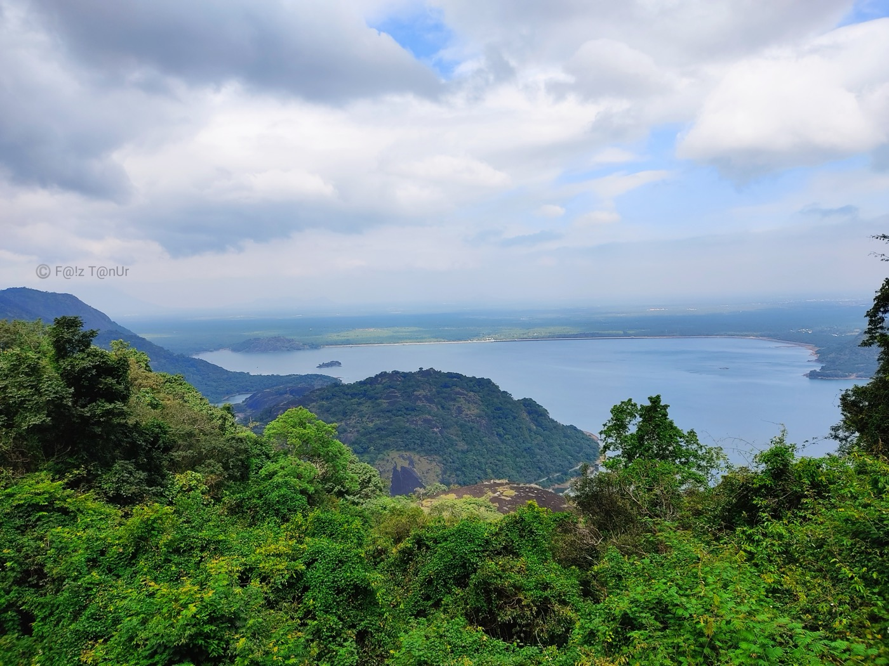
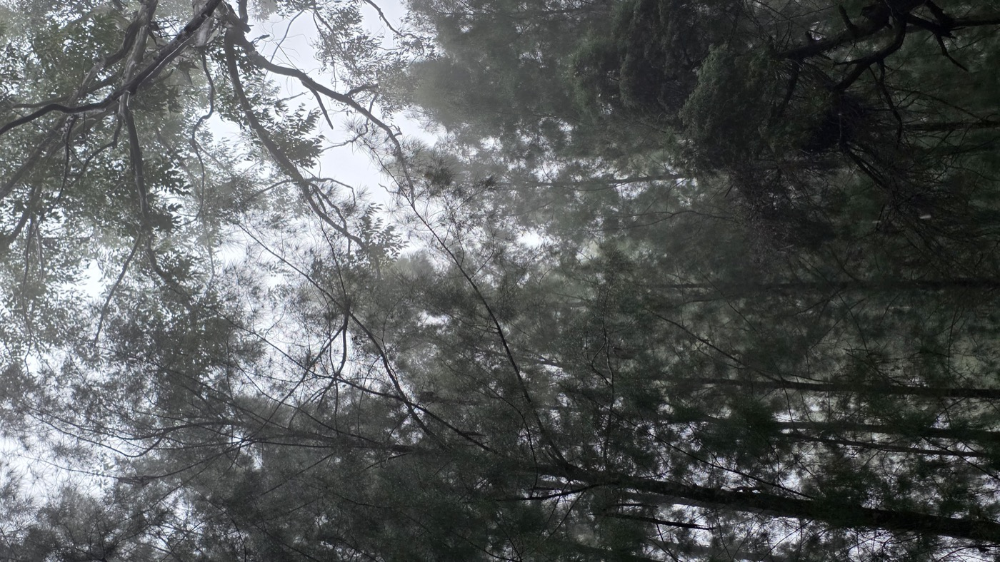

Best scenic-drive base
#2
Valparai
Best offbeat scenic-drive pick if the group wants something less obvious.
Tea-estate roads
Very niche feel
Moderate rain risk
- Reach Coimbatore overnight, then move via Pollachi into one of the prettiest ghat drives in the South.
- Works best as a slow car-based trip with dam stops, viewpoints, tea estates, and long unhurried drives.
- Feels more hidden than the usual tourist circuit, which is exactly why it fits this brief well.
Estimated: ₹6k to ₹10.5k per person
Open 3N / 4D plan
Night 0: Overnight train or bus from Chennai to Coimbatore.
Day 1: Breakfast in Coimbatore, head to Pollachi, do the Aliyar climb, check in, and keep the evening for estate roads and stay-side chilling.
Day 2: Tea-country drive day with viewpoint stops, dam stretches, and a slow lunch rather than a rushed sightseeing run.
Day 3: Sholayar-side roaming if the weather is good, or a rain-plan villa day with cards, music, and terrace time.
Day 4: Descend after breakfast, keep 1 to 2 scenic stops, and return toward Coimbatore for the night ride back.
Open photo album



Album photos via Wikimedia Commons.